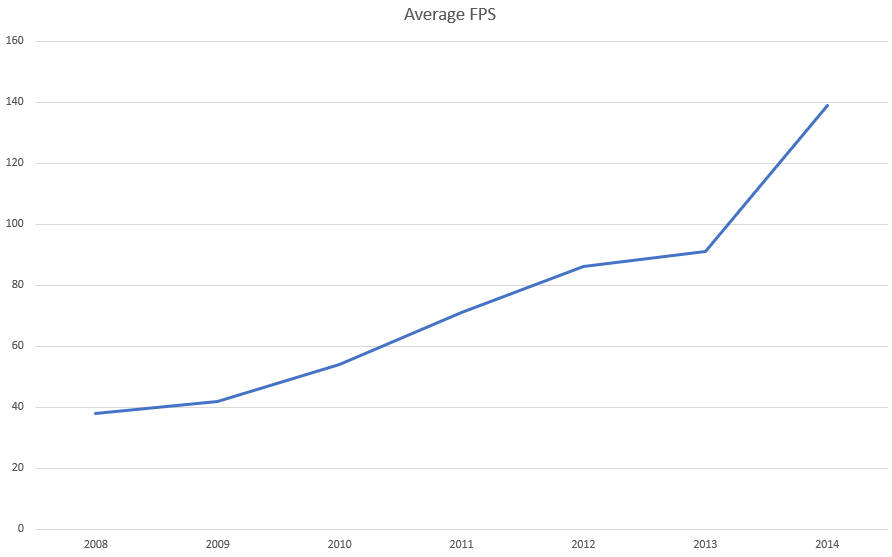

What is a GPU?
A graphics processing unit (GPU) is a specialized electronic circuit designed to rapidly manipulate and alter memory to accelerate the creation of images in a frame buffer intended for output to a display device. GPUs are used in embedded systems, mobile phones, personal computers, workstations, and game consoles. Although GPU's are usually used by consumers for gaming because of their extremely fast graphics processing power, they can also be used for compute based tasks such as AI, media upscaling, or "mining" crypto-currency. This is because both regular graphics rendering, such as in games, and AI, upscaling and crypto-currency mining all use similar types of equations which a CPU would struggle with while a GPU can fly through them.
This table contains some examples of the graphics cards on the market today along with their prices.
| GPU Vendor | Image | Price |
|---|---|---|
| AMD |  |
€350 |
| nVidia |  |
€1000 |
Here's a graph of the frames per second of graphics cards from 2008 to 2014 in the game "Crysis".
